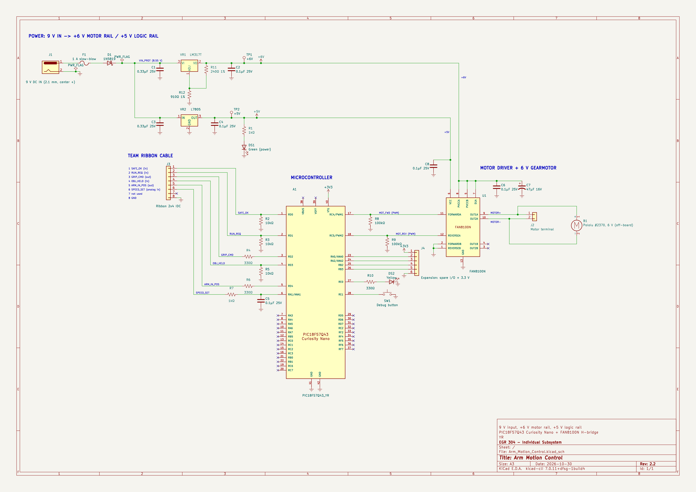

Schematic
Overview
This schematic is the Arm Motion Control subsystem of Team 107 Simple Educational Robotic Arm. It is drawn in KiCad 9 with US/ANSI symbols, and parts are joined by wires rather than net labels wherever possible, so the signal path can be followed by eye. The sheet has five blocks:
- Power: a 9 V DC barrel jack feeds a 1 A slow-blow fuse and a 1N5819 reverse-polarity Schottky diode, giving VIN_PROT of about 8.55 V. VR1 is an LM317T set to 6.0 V by R11 = 240 Ω and R12 = 910 Ω, using Vout = 1.25 V × (1 + 910 / 240) = 6.0 V. This 6 V rail is the motor rail. VR2 makes the +5 V logic rail for the H-bridge VCC and the power LED DS1. Each regulator has 0.33 µF on its input and 0.1 µF on its output. Test points TP1 and TP2 are on the 6 V and 5 V rails.
- Microcontroller: PIC18F57Q43 Curiosity Nano, powered from its own USB port with 3.3 V logic.
- Motor drive: an onsemi FAN8100N H-bridge drives the 6 V Pololu #2370 gearmotor through M+ and M−. The motor has only these two pins. RC4 and RC5 supply PWM (PWM1 outputs 1 and 2, routed with PPS; PWM1 cannot be routed to PORTB on this PIC). The motor supply has 47 µF and 0.1 µF bulk and decoupling capacitors.
- Debug and expansion:
- A status LED on RE0.
- A push button on RE1, using the weak pull-up.
- J4, a 6-pin expansion header carrying 3.3 V, GND, RA0, RA2, RB2 and RB3.
- Team ribbon: pins 1 to 8 carry, in order:
- SAFE_OK (in)
- RUN_REQ (in)
- GRIP_CMD (out)
- OBJ_HELD (in)
- ARM_IN_POS (out)
- SPEED_SET (analog in)
- pin 7, which is not used on this board
- GND
The three digital inputs have 10 kΩ pull-downs, so an unplugged cable reads 0, which means stop. The two outputs have 330 Ω series resistors. SPEED_SET has a 1 kΩ / 0.1 µF RC filter.


Revision 2.2: the motor PWM lines MOT_FWD and MOT_REV moved from RB0 / RB1 to RC4 / RC5. MCC showed that the PIC18F57Q43 can route its PWM1 outputs only to PORTC and PORTF, and neither PWM1 nor CCP1 / CCP2 can reach PORTB. Only the two Nano pins changed; R8, R9 and the FAN8100N side are the same.
3.3 V Operation Check
The PIC18F57Q43 on this board runs at 3.3 V. It is powered by the Curiosity Nano's own MIC5353 regulator from USB, and the VTG pin (+3V3 in the schematic) is that regulator's output. Nothing on this board drives VTG. Every connection to the PIC was checked against 3.3 V operation:
| Check | Requirement | Result |
|---|---|---|
| PIC18F57Q43 supply range | Operating voltage 1.8 V – 5.5 V (PIC18-Q43 family product brief) | 3.3 V is inside the range ✔ |
| Curiosity Nano target voltage | MIC5353 adjustable 1.8 V – 5.1 V, set to 3.3 V at the factory (user guide, sec. 3.3.1 "Target Regulator") | Leave the target voltage at 3.3 V in the MPLAB X project properties ✔ |
| Regulator current | 3.3 V loads need about 99 mA with margin (Power Budget); MIC5353 supplies 500 mA | ✔ |
| PIC → FAN8100N inputs (RC4, RC5) | FAN8100N input high ≥ 1.8 V, input low ≤ 0.7 V, input current ≤ 200 µA; datasheet lists "3.3 V and 5 V micro-controller interface" (datasheet) | A 3.3 V output is well above 1.8 V. The FAN8100N logic supply is 5 V, but its inputs only need 1.8 V, so no level shifter is needed ✔ |
| SPEED_SET analog input (RA1) | ADC reference = VDD = 3.3 V; the User board's speed knob also runs from its Nano's 3.3 V, so the signal is 0 – 3.3 V | ✔ |
| Ribbon signals to and from the other boards | All three boards use PIC18F57Q43 Curiosity Nanos at 3.3 V, so every logic level on the ribbon is 0 / 3.3 V | ✔ All three Nanos must stay at 3.3 V. If one board's target voltage were changed to 5 V, its outputs would exceed this PIC's 3.3 V supply. |
| Debug LED DS2 on RE0 | (3.3 V − 2.1 V) / 330 Ω ≈ 3.6 mA, a small load for one I/O pin | ✔ |
| Debug button SW1 on RE1 | Internal weak pull-up to 3.3 V; the button pulls to GND | ✔ |
| J4 3.3 V pin | Comes from VTG, so an add-on sensor runs at the same 3.3 V logic level as the PIC | ✔ |
The only 5 V and 6 V nets on the board are the FAN8100N supply pins (VCC, PVCC), the motor and the power LED. None of them connects to a PIC pin.
How the Schematic Meets the User Needs and Product Requirements
The team grouped its user needs into eleven categories and turned them into product requirements PR-01 to PR-18 (user needs, product requirements). The table shows which parts of this schematic serve each need that applies to the Arm Motion Control board, and how.
| User need category | Requirements | What in the schematic serves it | How it works |
|---|---|---|---|
| Safety | PR-12, PR-14, Reg. 6.3, 6.7 | R2, R3, R5 pull-downs on SAFE_OK, RUN_REQ, OBJ_HELD; R8, R9 pull-downs on the H-bridge inputs; F1; D1; FAN8100N thermal shutdown | If the ribbon cable is unplugged or the User board drops SAFE_OK, the inputs read 0 and the firmware stops the motor. R8 and R9 hold both H-bridge inputs low while the PIC resets, so the motor cannot twitch at power-up. F1 (1 A slow-blow) opens on a short, D1 blocks a reversed adapter, and the FAN8100N shuts down if it overheats during a stall. |
| Accuracy & Repeatability | PR-01, PR-02, PR-04 | VR1 LM317T regulated 6 V rail; C6, C7 on the motor supply; PWM on RC4 / RC5 | The motor always sees a regulated 6.0 V (set by 1 % resistors R11 / R12) instead of a raw adapter voltage, so the same PWM duty gives the same speed every run. Bulk and bypass capacitors keep the rail steady when the motor starts. |
| Programming & Control | PR-07, PR-16 | FAN8100N forward / reverse inputs on two PWM pins; SPEED_SET on RA1 (ADC) | Speed and direction are two duty-cycle values, which is easy for a student to change in code and see on the arm. SPEED_SET from the User board is read by the ADC through a 1 kΩ / 0.1 µF filter, so the speed knob gives a smooth reading. |
| Gripper & Object Handling (team link) | PR-01, PR-03 | J3 ribbon: GRIP_CMD and ARM_IN_POS outputs with R4, R6 (330 Ω); OBJ_HELD input | The arm tells the gripper when to close and reports when it is in position, and it waits for OBJ_HELD before moving on. The 330 Ω resistors limit current if two boards ever drive the same wire. |
| Documentation & Troubleshooting | PR-09, PR-18 | TP1 (+6 V), TP2 (+5 V); power LED DS1; debug LED DS2 on RE0; button SW1 on RE1 | DS1 shows at a glance that the 5 V rail is up. The test points let a user check both rails with a meter. DS2 and SW1 let the firmware show its state and step through a sequence during troubleshooting. |
| Sensors, Vision & Expansion | PR-10, PR-11 | J4 header (3.3 V, GND, RA0, RA2, RB2, RB3); unused FAN8100N channel B | A sensor such as a joint potentiometer or magnetic encoder can be added on J4 (RA0 and RA2 are analog-capable) without a new PCB. The second H-bridge channel is available for a second motor. |
| Calibration, Maintenance & Repair | PR-05, PR-10 | U1 in a socket; Curiosity Nano on female headers; J2 screw terminal for the motor | The driver, the MCU board and the motor can each be replaced without desoldering. |
| Assembly, Wiring & Components | PR-10, PR-14 | All through-hole parts; keyed 2×4 shrouded header J3; parts run within ratings | The board can be hand-soldered and built on a breadboard first. The keyed header prevents the ribbon from being plugged in backwards. The Power Budget shows every part stays within its limits. |
| Power, Stability & Physical Design | PR-13, PR-14, Reg. 6.1 | 9 V adapter, VR1 with heat sink, VR2, separate motor and logic rails | Everything runs from a low-voltage desktop adapter. The motor and the logic have separate regulators, so motor noise does not reach the logic supply, and VR1's heat sink keeps it cool at stall. |
| Cost & Accessibility | PR-15, PR-17 | FAN8100N and passives already in hand; common TO-220 regulators | The parts to order cost $128.35 in total, and every part is a common, documented through-hole component. |
Signal path, start to finish: the User board raises SAFE_OK and RUN_REQ → the PIC reads SPEED_SET on the ADC and drives PWM on RC4 (forward) or RC5 (reverse) → the FAN8100N switches the 6 V rail across the motor → when the move is done the PIC raises ARM_IN_POS and GRIP_CMD → the Gripper board answers on OBJ_HELD → the arm moves to the place position. At any point, SAFE_OK going low sets both PWM outputs to 0 % and the motor stops.
Resources
The schematic is available as a PDF download. The KiCad 9 project (Zip) includes the custom YR_Custom symbol library and the finned FAN8100N footprint.